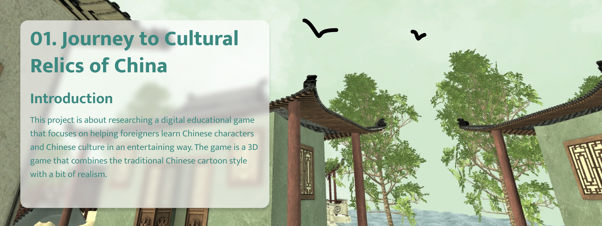
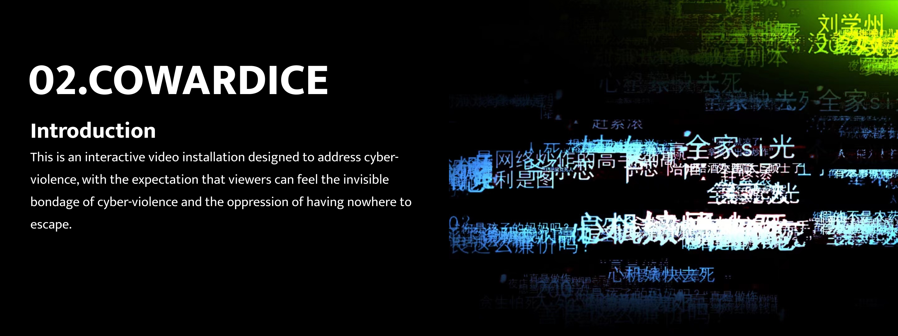
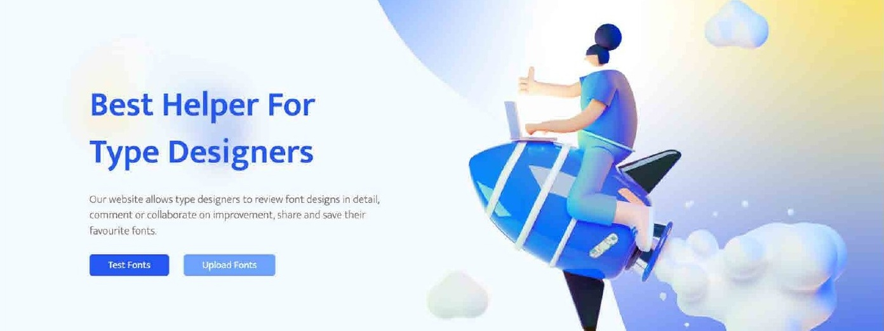
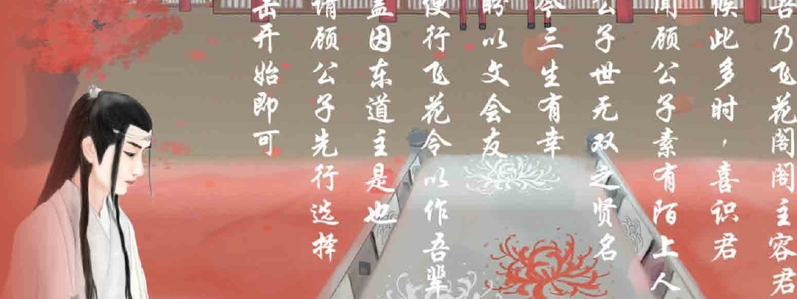

01 / EDUCATIONAL GAME · MSc THESIS · 2022
Journey to Cultural Relics of Ancient China
A 3D learning game that brings Chinese characters and the Four Great Inventions into an explorable cultural world.
02 / Portfolio
Games, cultural encounters and interactive experiences — a selection of research and creative practice.
4 projects shown.

01 / EDUCATIONAL GAME · MSc THESIS · 2022
A 3D learning game that brings Chinese characters and the Four Great Inventions into an explorable cultural world.

02 / INTERACTIVE INSTALLATION · EXHIBITED 2023
An interactive video installation that translates the pressure of cyber violence into a bodily, spatial encounter.

03 / WEB DESIGN & DEVELOPMENT · 2022
A web platform for type designers to inspect fonts, experiment with their appearance and exchange feedback.

04 / POETRY GAME · BEng THESIS · 2021
A Unity-based adaptation of Feihualing that turns the exchange of Chinese poetic verses into a timed challenge.